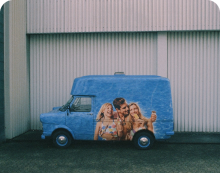

Toggle navigation
Anasayfa
Hesap
Favoriler
Hesap Ayarları
Uzman Profilim
Klinik Profilim
Destek
Çıkış Yap
Hoşgeldin
Kaan Yılmaz
Favori Listesi
İçerikler
Uzmanlar
Klinik
UAV's have the potential to be great tools
Dr. Melda Durmuş
UAV's have the potential to be great tools
Dr. Melda Durmuş

UAV's have the potential to be great tools
Dr. Melda Durmuş
UAV's have the potential to be great tools
Dr. Melda Durmuş
Dr. Enes Durmuş
Ortodontist
İstanbul
Dr. Enes Durmuş
Ortodontist
İstanbul
Acıbadem Hastanesi
Genel
İstanbul
Medipol Hastanesi
Genel
İstanbul


 Dr. Melda Durmuş
Dr. Melda Durmuş